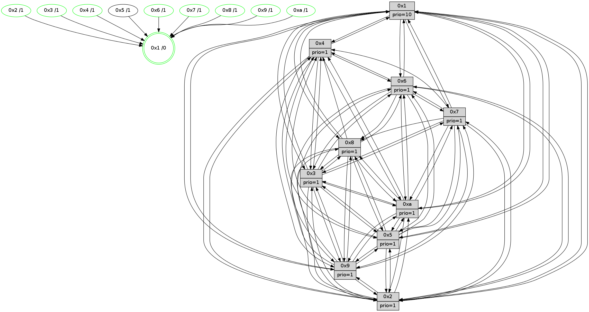

>> << IDX [start] -100 -25 -5 +0 +5 +25 +100 [1435.61508608]
 Previous packets
----------------------------------------------------------------------
1430.098166 beacon01(faad) #0 coord=01,02,03,04,05,06,07,0a,09,08 cycle=688.0ms assoc
-- color-indic=1 64 59 8e
1430.108149 beacon02(faad) #0 coord=01,02,03,04,05,06,07,0a,09,08 cycle=688.0ms assoc 64 ca bf
1430.118147 beacon03(faad) #0 coord=01,02,03,04,05,06,07,0a,09,08 cycle=688.0ms assoc 64 b0 f2
1430.128150 beacon04(faad) #0 coord=01,02,03,04,05,06,07,0a,09,08 cycle=688.0ms assoc 64 c7 18
1430.138148 beacon05(faad) #0 coord=01,02,03,04,05,06,07,0a,09,08 cycle=688.0ms assoc 64 bd 55
1430.148149 beacon06(faad) #0 coord=01,02,03,04,05,06,07,0a,09,08 cycle=688.0ms assoc 64 33 82
1430.158149 beacon07(faad) #0 coord=01,02,03,04,05,06,07,0a,09,08 cycle=688.0ms assoc 64 49 cf
1430.168154 beacon0a(faad) #0 coord=01,02,03,04,05,06,07,0a,09,08 cycle=688.0ms assoc 64 38 c4
1430.188157 beacon08(faad) #0 coord=01,02,03,04,05,06,07,0a,09,08 cycle=688.0ms assoc 64 cc 5e
1430.200608 [Hello(5): seq=912 sym=7,6,4,3,1,9,8,10,2 sysInfo=hasWarning stat=7:12,9,1,1/6:10,1,15,5/4:2,15,8,0/3:14,0,14,2/1:1,6,3,0/9:1,9,0,11/8:0,7,7,5/10:0,6,6,9/2:3,0,12,7]
1430.203071 [Hello(1): seq=821 sym=4,2,9,5,10,3,8,6,7 sysInfo=coloring-mode-on,ColoringModeRequestCalled stat=4:1,2,13,4/2:2,7,7,5/9:15,10,7,2/5:1,6,10,9/10:4,13,10,8/3:8,6,10,11/8:15,11,8,4/6:10,1,8,2/7:0,14,15,2]
1430.206108 [Hello(3): seq=912 sym=1,7,6,2,4,8,9,10,5 sysInfo=hasWarning stat=1:14,13,15,0/7:14,3,0,15/6:1,14,7,2/2:1,3,1,0/4:6,11,2,14/8:7,3,8,6/9:0,10,12,1/10:10,5,2,5/5:11,2,0,1]
1430.208918 [Color(3) seq=541 @0:0 prio=1]
1430.212570 [Color(10) seq=501 @0:0 prio=1]
1430.214799 [Color(9) seq=471 @0:0 prio=1]
1430.217904 [Hello(2): seq=908 sym=4,5,7,6,3,9,8,10,1 sysInfo=hasWarning stat=4:13,6,11,14/5:3,10,2,3/7:12,4,14,2/6:1,3,1,1/3:7,13,2,0/9:14,14,8,10/8:12,3,7,13/10:11,4,7,11/1:8,0,7,0]
1430.221031 [Color(2) seq=488 @0:0 prio=1]
1430.223797 [Hello(6): seq=912 sym=3,2,5,4,7,9,8,10,1 sysInfo=hasWarning stat=3:4,11,5,0/2:7,14,4,0/5:8,5,8,4/4:1,3,12,9/7:7,6,9,0/9:5,11,0,11/8:15,12,2,7/10:2,3,8,13/1:2,2,12,1]
1430.227902 [Color(6) seq=544 @0:0 prio=1]
----------------------------------------------------------------------
1430.886297 beacon01(faad) #0 coord=01,02,03,04,05,06,07,0a,09,08 cycle=688.0ms assoc
-- color-indic=1 64 e5 8b
1430.896279 beacon02(faad) #0 coord=01,02,03,04,05,06,07,0a,09,08 cycle=688.0ms assoc 64 76 ba
1430.906279 beacon03(faad) #0 coord=01,02,03,04,05,06,07,0a,09,08 cycle=688.0ms assoc 64 0c f7
1430.916279 beacon04(faad) #0 coord=01,02,03,04,05,06,07,0a,09,08 cycle=688.0ms assoc 64 7b 1d
1430.926279 beacon05(faad) #0 coord=01,02,03,04,05,06,07,0a,09,08 cycle=688.0ms assoc 64 01 50
1430.936281 beacon06(faad) #0 coord=01,02,03,04,05,06,07,0a,09,08 cycle=688.0ms assoc 64 8f 87
1430.946282 beacon07(faad) #0 coord=01,02,03,04,05,06,07,0a,09,08 cycle=688.0ms assoc 64 f5 ca
1430.956288 beacon0a(faad) #0 coord=01,02,03,04,05,06,07,0a,09,08 cycle=688.0ms assoc 64 84 c1
1430.976288 beacon08(faad) #0 coord=01,02,03,04,05,06,07,0a,09,08 cycle=688.0ms assoc 64 70 5b
1430.987821 [Hello(10): seq=845 sym=6,2,3,8,7,5,9,4,1 sysInfo=hasWarning stat=6:10,10,3,5/2:5,4,7,0/3:9,2,12,15/8:11,2,4,4/7:3,9,3,10/5:1,13,0,1/9:8,12,3,1/4:8,1,14,3/1:2,15,7,1]
1430.992574 [Hello(7): seq=912 sym=2,3,5,6,4,8,9,10,1 sysInfo=hasWarning stat=2:10,10,12,4/3:2,1,15,3/5:0,7,14,3/6:1,14,12,12/4:8,6,10,2/8:3,6,1,0/9:2,3,11,2/10:0,1,4,7/1:7,2,8,0]
1430.995144 [Color(1) seq=592 @0:0 prio=10]
1430.997176 [Hello(8): seq=856 sym=5,2,3,9,6,4,10,1 sysInfo=hasWarning stat=5:14,10,8,1/2:5,4,3,12/3:14,5,9,4/9:12,10,11,5/6:5,4,3,0/4:13,7,5,2/10:11,9,1,5/1:0,14,12,0]
1430.999638 [Hello(4): seq=912 sym=5,8,6,2,3,9,10,1 sysInfo= stat=5:13,6,10,2/8:5,13,4,1/6:7,11,5,0/2:0,12,13,1/3:3,7,6,15/9:10,0,1,2/10:0,10,6,14/1:10,8,12,1]
1431.003824 [Color(8) seq=511 @0:0 prio=1]
1431.005246 [Color(7) seq=440 @0:0 prio=1]
1431.007596 [Color(4) seq=451 @0:0 prio=1]
----------------------------------------------------------------------
1431.674431 beacon01(faad) #0 coord=01,02,03,04,05,06,07,0a,09,08 cycle=688.0ms assoc
-- color-indic=1 64 21 85
1431.684413 beacon02(faad) #0 coord=01,02,03,04,05,06,07,0a,09,08 cycle=688.0ms assoc 64 b2 b4
1431.694413 beacon03(faad) #0 coord=01,02,03,04,05,06,07,0a,09,08 cycle=688.0ms assoc 64 c8 f9
1431.704413 beacon04(faad) #0 coord=01,02,03,04,05,06,07,0a,09,08 cycle=688.0ms assoc 64 bf 13
1431.714414 beacon05(faad) #0 coord=01,02,03,04,05,06,07,0a,09,08 cycle=688.0ms assoc 64 c5 5e
1431.724414 beacon06(faad) #0 coord=01,02,03,04,05,06,07,0a,09,08 cycle=688.0ms assoc 64 4b 89
1431.734415 beacon07(faad) #0 coord=01,02,03,04,05,06,07,0a,09,08 cycle=688.0ms assoc 64 31 c4
1431.744418 beacon0a(faad) #0 coord=01,02,03,04,05,06,07,0a,09,08 cycle=688.0ms assoc 64 40 cf
1431.754419 beacon09(faad) #0 coord=01,02,03,04,05,06,07,0a,09,08 cycle=688.0ms assoc 64 ce 18
1431.764419 beacon08(faad) #0 coord=01,02,03,04,05,06,07,0a,09,08 cycle=688.0ms assoc 64 b4 55
1431.775648 [Hello(1): seq=822 sym=4,2,9,5,10,3,8,6,7 sysInfo=coloring-mode-on,ColoringModeRequestCalled stat=4:2,3,13,4/2:3,8,7,5/9:15,11,7,2/5:1,6,10,9/10:5,14,10,8/3:9,7,10,11/8:0,12,8,4/6:11,2,8,2/7:0,15,15,2]
1431.779884 [Color(9) seq=472 @0:0 prio=1]
1431.781143 [Color(10) seq=502 @0:0 prio=1]
1431.782410 [Hello(5): seq=913 sym=7,6,4,3,1,9,8,10,2 sysInfo=hasWarning stat=7:13,10,1,1/6:11,2,15,5/4:3,0,8,0/3:15,1,14,2/1:2,7,3,0/9:1,10,0,11/8:1,8,7,5/10:0,7,6,9/2:4,1,12,7]
1431.785649 [Hello(6): seq=913 sym=3,2,5,4,7,9,8,10,1 sysInfo=hasWarning stat=3:4,11,5,0/2:7,14,4,0/5:9,5,8,4/4:2,4,12,9/7:8,7,9,0/9:5,11,0,11/8:0,13,2,7/10:3,3,8,13/1:3,3,12,1]
1431.788778 [STC(1) #0.248 tree-change,inconsistent-stability,stable,to-color d=0]
1431.790402 [Color(6) seq=545 @0:0 prio=1]
1431.792968 [Hello(2): seq=909 sym=4,5,7,6,3,9,8,10,1 sysInfo=hasWarning stat=4:14,7,11,14/5:4,10,2,3/7:13,5,14,2/6:2,4,1,1/3:7,13,2,0/9:14,14,8,10/8:13,4,7,13/10:12,4,7,11/1:9,1,7,0]
1431.795546 [Hello(3): seq=913 sym=1,7,6,2,4,8,9,10,5 asym= sysInfo=hasWarning stat=1:15,14,15,0/7:15,4,0,15/6:2,15,7,2/2:2,4,1,0/4:7,12,2,14/8:8,4,8,6/9:0,11,12,1/10:11,6,2,5/5:12,2,0,1]
1431.799316 [Color(3) seq=542 @0:0 prio=1]
1431.800727 [Color(2) seq=489 @0:0 prio=1]
----------------------------------------------------------------------
1432.462563 beacon01(faad) #0 coord=01,02,03,04,05,06,07,0a,09,08 cycle=688.0ms assoc
-- color-indic=1 64 9d 80
1432.472545 beacon02(faad) #0 coord=01,02,03,04,05,06,07,0a,09,08 cycle=688.0ms assoc 64 0e b1
1432.482546 beacon03(faad) #0 coord=01,02,03,04,05,06,07,0a,09,08 cycle=688.0ms assoc 64 74 fc
1432.492546 beacon04(faad) #0 coord=01,02,03,04,05,06,07,0a,09,08 cycle=688.0ms assoc 64 03 16
1432.502547 beacon05(faad) #0 coord=01,02,03,04,05,06,07,0a,09,08 cycle=688.0ms assoc 64 79 5b
1432.512545 beacon06(faad) #0 coord=01,02,03,04,05,06,07,0a,09,08 cycle=688.0ms assoc 64 f7 8c
1432.522547 beacon07(faad) #0 coord=01,02,03,04,05,06,07,0a,09,08 cycle=688.0ms assoc 64 8d c1
1432.532552 beacon0a(faad) #0 coord=01,02,03,04,05,06,07,0a,09,08 cycle=688.0ms assoc 64 fc ca
1432.552551 beacon08(faad) #0 coord=01,02,03,04,05,06,07,0a,09,08 cycle=688.0ms assoc 64 08 50
1432.563768 [STC(5)->1 #0.248 tree-change,inconsistent-stability,to-color d=1]
1432.566271 [Hello(9): seq=857 sym=2,5,3,4,7,6,8,10,1 sysInfo=hasWarning stat=2:9,0,3,11/5:11,10,3,8/3:5,4,14,4/4:3,15,10,3/7:1,9,11,5/6:8,6,1,15/8:1,7,9,7/10:14,5,6,0/1:3,15,11,1]
1432.569002 [Color(1) seq=593 @0:0 prio=10]
1432.570590 [Hello(7): seq=913 sym=2,3,5,6,4,8,9,10,1 sysInfo=hasWarning stat=2:11,11,12,4/3:3,2,15,3/5:1,7,14,3/6:2,15,12,12/4:8,7,10,2/8:3,6,1,0/9:2,4,11,2/10:1,2,4,7/1:8,2,9,0]
1432.573070 [Hello(10): seq=846 sym=6,2,3,8,7,5,9,4,1 sysInfo=hasWarning stat=6:11,11,3,5/2:6,5,7,0/3:10,3,12,15/8:12,3,4,4/7:4,10,3,10/5:2,13,0,1/9:8,12,3,1/4:9,2,14,3/1:3,0,8,1]
1432.575645 [STC(7)->1 #0.248 tree-change,inconsistent-stability,stable,to-color d=1]
1432.577348 [STC(9)->1 #0.248 tree-change,inconsistent-stability,stable,to-color d=1]
1432.579320 [Hello(4): seq=913 sym=5,6,2,3,9,10,1 sysInfo= stat=5:14,6,10,2/6:8,12,5,0/2:1,13,13,1/3:4,8,6,15/9:10,1,1,2/10:0,11,6,14/1:11,8,13,1]
1432.582061 [Hello(8): seq=857 sym=5,2,3,9,6,4,10,1 sysInfo=hasWarning stat=5:15,10,8,1/2:6,5,3,12/3:15,6,9,4/9:12,11,11,5/6:6,5,3,0/4:13,8,5,2/10:12,10,1,5/1:1,14,13,0]
1432.584942 [STC(10)->1 #0.248 tree-change,inconsistent-stability,stable,to-color d=1]
1432.587611 [STC(4)->1 #0.248 tree-change,inconsistent-stability,stable,to-color d=1]
1432.590007 [STC(8)->1 #0.248 tree-change,inconsistent-stability,stable,to-color d=1]
1432.591648 [Color(7) seq=441 @0:0 prio=1]
1432.593560 [Color(8) seq=512 @0:0 prio=1]
1432.604236 [Color(4) seq=452 @0:0 prio=1]
----------------------------------------------------------------------
1433.250695 beacon01(faad) #0 coord=01,02,03,04,05,06,07,0a,09,08 cycle=688.0ms assoc
-- color-indic=1 64 a9 98
1433.260677 beacon02(faad) #0 coord=01,02,03,04,05,06,07,0a,09,08 cycle=688.0ms assoc 64 3a a9
1433.270677 beacon03(faad) #0 coord=01,02,03,04,05,06,07,0a,09,08 cycle=688.0ms assoc 64 40 e4
1433.280678 beacon04(faad) #0 coord=01,02,03,04,05,06,07,0a,09,08 cycle=688.0ms assoc 64 37 0e
1433.290678 beacon05(faad) #0 coord=01,02,03,04,05,06,07,0a,09,08 cycle=688.0ms assoc 64 4d 43
1433.300677 beacon06(faad) #0 coord=01,02,03,04,05,06,07,0a,09,08 cycle=688.0ms assoc 64 c3 94
1433.310678 beacon07(faad) #0 coord=01,02,03,04,05,06,07,0a,09,08 cycle=688.0ms assoc 64 b9 d9
1433.320682 beacon0a(faad) #0 coord=01,02,03,04,05,06,07,0a,09,08 cycle=688.0ms assoc 64 c8 d2
1433.340683 beacon08(faad) #0 coord=01,02,03,04,05,06,07,0a,09,08 cycle=688.0ms assoc 64 3c 48
1433.351864 [Hello(5): seq=914 sym=7,6,4,3,1,9,8,10,2 sysInfo=hasWarning stat=7:14,11,2,1/6:12,3,15,5/4:4,1,9,0/3:0,2,14,2/1:2,8,4,0/9:2,10,1,11/8:2,9,8,5/10:1,7,7,9/2:5,2,12,7]
1433.356434 [Color(10) seq=503 @0:0 prio=1]
1433.357738 [Color(9) seq=473 @0:0 prio=1]
1433.359370 [Hello(1): seq=823 sym=4,2,9,5,10,3,8,6,7 sysInfo=coloring-mode-on,ColoringModeRequestCalled stat=4:3,4,14,4/2:4,9,7,5/9:0,11,8,2/5:1,6,11,9/10:6,14,11,8/3:10,8,10,11/8:1,13,9,4/6:11,3,8,2/7:1,0,0,2]
1433.362898 [Hello(2): seq=910 sym=4,5,7,6,3,9,8,10,1 sysInfo=hasWarning stat=4:15,8,12,14/5:4,10,3,3/7:14,6,15,2/6:2,4,1,1/3:7,13,2,0/9:15,14,9,10/8:14,5,8,13/10:13,4,8,11/1:10,2,7,0]
1433.365746 [Color(2) seq=490 @0:0 prio=1]
1433.368452 [Hello(3): seq=914 sym=1,7,6,2,4,8,9,10,5 sysInfo=hasWarning stat=1:0,15,15,0/7:0,5,1,15/6:2,15,7,2/2:2,5,1,0/4:8,13,3,14/8:9,5,9,6/9:1,11,13,1/10:12,6,3,5/5:12,2,1,1]
1433.372233 [Color(3) seq=543 @0:0 prio=1]
1433.375422 [Hello(6): seq=914 sym=3,2,5,4,7,9,8,10,1 sysInfo=hasWarning stat=3:5,12,5,0/2:8,15,4,0/5:9,5,9,4/4:3,5,13,9/7:9,8,10,0/9:6,11,1,11/8:1,14,3,7/10:4,3,9,13/1:4,4,12,1]
1433.380500 [Color(6) seq=546 @0:0 prio=1]
----------------------------------------------------------------------
1434.038825 beacon01(faad) #0 coord=01,02,03,04,05,06,07,0a,09,08 cycle=688.0ms assoc
-- color-indic=1 64 15 9d
1434.048808 beacon02(faad) #0 coord=01,02,03,04,05,06,07,0a,09,08 cycle=688.0ms assoc 64 86 ac
1434.058807 beacon03(faad) #0 coord=01,02,03,04,05,06,07,0a,09,08 cycle=688.0ms assoc 64 fc e1
1434.068808 beacon04(faad) #0 coord=01,02,03,04,05,06,07,0a,09,08 cycle=688.0ms assoc 64 8b 0b
1434.078808 beacon05(faad) #0 coord=01,02,03,04,05,06,07,0a,09,08 cycle=688.0ms assoc 64 f1 46
1434.088809 beacon06(faad) #0 coord=01,02,03,04,05,06,07,0a,09,08 cycle=688.0ms assoc 64 7f 91
1434.098808 beacon07(faad) #0 coord=01,02,03,04,05,06,07,0a,09,08 cycle=688.0ms assoc 64 05 dc
1434.108814 beacon0a(faad) #0 coord=01,02,03,04,05,06,07,0a,09,08 cycle=688.0ms assoc 64 74 d7
1434.128814 beacon08(faad) #0 coord=01,02,03,04,05,06,07,0a,09,08 cycle=688.0ms assoc 64 80 4d
1434.140043 [Hello(9): seq=858 sym=2,5,3,4,7,6,8,10,1 sysInfo=hasWarning stat=2:10,1,3,11/5:12,10,3,8/3:6,5,14,4/4:4,0,11,3/7:1,10,11,5/6:9,7,1,15/8:2,8,10,7/10:14,5,7,0/1:4,15,11,1]
1434.144453 [Hello(7): seq=914 sym=2,3,5,6,4,8,9,10,1 sysInfo=hasWarning stat=2:12,12,12,4/3:4,3,15,3/5:2,7,15,3/6:3,0,12,12/4:8,8,10,2/8:3,7,1,0/9:3,5,11,2/10:1,3,4,7/1:9,2,9,0]
1434.147655 [Hello(10): seq=847 sym=6,2,3,8,7,5,9,4,1 sysInfo=hasWarning stat=6:12,12,3,5/2:7,6,7,0/3:11,4,12,15/8:12,4,5,4/7:4,11,3,10/5:3,13,0,1/9:8,13,3,1/4:9,3,15,3/1:4,0,8,1]
1434.150302 [Color(7) seq=442 @0:0 prio=1]
1434.152341 [Hello(4): seq=914 sym=5,6,2,3,9,10,1 sysInfo= stat=5:15,6,11,2/6:9,13,5,0/2:2,14,13,1/3:5,9,6,15/9:11,2,1,2/10:0,12,6,14/1:12,8,13,1]
1434.156815 [Color(4) seq=453 @0:0 prio=1]
1434.158990 [Color(1) seq=594 @0:0 prio=10]
1434.168963 PARSE ERROR************************
Traceback (most recent call last):
File "PacketAnalysis.py", line 167, in showOperaPacket
structPacket = OperaPacketParse.parsePacket(rawPacket)
File "../../pkg-python/HipSens/Core/OperaPacketParse.py", line 461, in parsePacket
return parseHelloMessage(data)
File "../../pkg-python/HipSens/Core/OperaPacketParse.py", line 125, in parseHelloMessage
struct.unpack("!H",linkList[:2])[0])
error: unpack requires a string argument of length 2
48 30 08 00 03 5a 00 02 02 10 05 00 02 00 03 00 09 00 06 00 04 00 0a 00 01 00 53 04 00 02 00 00 4c 10 19 a0 c3 67 49 70 5b cd 03 67 25 9d 51 bc 0d e2 4d 97
1434.172928 [Color(8) seq=513 @0:0 prio=1]
----------------------------------------------------------------------
1434.826956 beacon01(faad) #0 coord=01,02,03,04,05,06,07,0a,09,08 cycle=688.0ms assoc
-- color-indic=1 64 d1 93
1434.836937 beacon02(faad) #0 coord=01,02,03,04,05,06,07,0a,09,08 cycle=688.0ms assoc 64 42 a2
1434.846937 beacon03(faad) #0 coord=01,02,03,04,05,06,07,0a,09,08 cycle=688.0ms assoc 64 38 ef
1434.856940 beacon04(faad) #0 coord=01,02,03,04,05,06,07,0a,09,08 cycle=688.0ms assoc 64 4f 05
1434.866939 beacon05(faad) #0 coord=01,02,03,04,05,06,07,0a,09,08 cycle=688.0ms assoc 64 35 48
1434.876941 beacon06(faad) #0 coord=01,02,03,04,05,06,07,0a,09,08 cycle=688.0ms assoc 64 bb 9f
1434.886938 beacon07(faad) #0 coord=01,02,03,04,05,06,07,0a,09,08 cycle=688.0ms assoc 64 c1 d2
1434.896944 beacon0a(faad) #0 coord=01,02,03,04,05,06,07,0a,09,08 cycle=688.0ms assoc 64 b0 d9
1434.916944 beacon08(faad) #0 coord=01,02,03,04,05,06,07,0a,09,08 cycle=688.0ms assoc 64 44 43
1434.928839 [Hello(1): seq=824 sym=4,2,9,5,10,3,8,6,7 sysInfo=coloring-mode-on,ColoringModeRequestCalled stat=4:3,4,14,4/2:5,10,7,5/9:1,11,8,2/5:1,6,11,9/10:6,14,11,8/3:11,9,10,11/8:2,14,9,4/6:12,4,8,2/7:1,0,0,2]
1434.933265 [Hello(2): seq=911 sym=4,5,7,6,3,9,8,10,1 sysInfo=hasWarning stat=4:0,9,12,14/5:5,10,3,3/7:15,7,15,2/6:3,5,1,1/3:8,14,2,0/9:0,14,9,10/8:15,6,8,13/10:14,4,8,11/1:10,3,7,0]
1434.936497 [Color(10) seq=504 @0:0 prio=1]
1434.938496 [Hello(3): seq=915 sym=1,7,6,2,4,8,9,10,5 sysInfo=hasWarning stat=1:0,0,15,0/7:1,6,1,15/6:3,0,7,2/2:2,5,1,0/4:9,14,3,14/8:10,6,9,6/9:2,11,13,1/10:13,6,3,5/5:13,2,1,1]
1434.941782 [Color(9) seq=474 @0:0 prio=1]
1434.944369 [Hello(5): seq=915 sym=7,6,4,3,1,9,8,10,2 sysInfo=hasWarning stat=7:15,12,2,1/6:13,4,15,5/4:5,2,9,0/3:1,3,14,2/1:3,9,4,0/9:3,11,1,11/8:3,10,8,5/10:2,8,7,9/2:6,3,12,7]
1434.947865 [Color(2) seq=491 @0:0 prio=1]
1434.950263 [Hello(6): seq=915 sym=3,2,5,4,7,9,8,10,1 sysInfo=hasWarning stat=3:5,12,5,0/2:8,15,4,0/5:10,5,9,4/4:4,6,13,9/7:10,9,10,0/9:7,11,1,11/8:2,15,3,7/10:5,3,9,13/1:4,5,12,1]
1434.952776 [Color(3) seq=544 @0:0 prio=1]
1434.954816 [Color(6) seq=547 @0:0 prio=1]